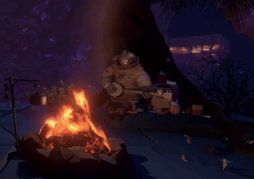
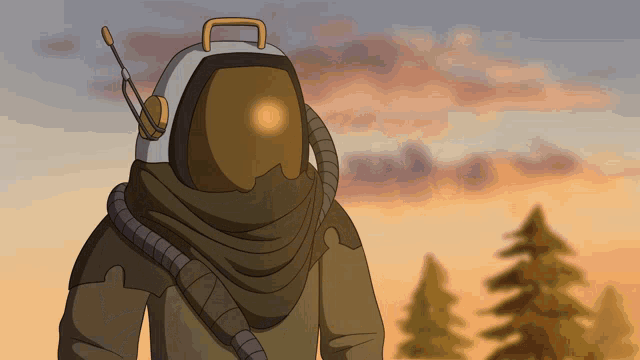
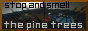

Welcome, Traveller
This game - so many discoveries! I can't wait to share what I've found with you.
Please do not read this page if you have not played Outer Wilds, if you haven't, go play it. It means more than the world to me, and I'm sure you will get something meaningful out
of it too.
Please.
Spoiler warning for the game! Don't say I didn't warn you!

"Music is a moral law. It gives soul to the universe, wings to the mind, flight to the imagination, and charm and gaiety to life and to
everything."
Said plato. I was researching a little about Outer Wilds' development, I came across how the music was not just an afterthought. The game and the song were developed
together, the music IS the game.
Throughout the game, the other explorers play their instruments, the world is ending over, and over, and over again. They dont know, but and in all their ignorance,
they play music and watch it die. I remember getting lost, surrounded by thousands of stars, and there in that darkness I was able to hear the travelers play their instruments, and it filled
me with awe. In the worst circumstance, when
everything has gone to absoulute shit, and you feel so alone there's still someone just like you, maybe they're
lonely, maybe they're not, and that doesn't
matter, because they sing that song, they play that music, they speak those words and share that eagerness to see how it ends, and they still play. They know that
someone shares that sentiment with them.
Before even playing through the game, I sat staring at the main menu of this game, the music alone, causing me to cry. I didn't even have any real experience playing
yet, and I felt this games impact on me from the start.
"As a child, I considered such unknowns sinister. Now, though, I understand they bear no ill will. The universe is, and we are."
Solanum says that in the game. I really like Solanum's character, it's interesting that you watch her grow up throughout the game, her entire life is entirely recorded through writing, yet you learn who this person is, how they feel, what they do for fun, what drives them.
You see her childhood on the Hourglass Twins, you
see her school life on Brittle Hollow in the Hanging City, and you see her pilgrimage to the Quantum Moon. Solanum is the last Nomai left in the system after The Interloper
spread its lethal matter all over the solar system. The quote that is the title of this section is by Solanum herself, aboard her shuttle on the Quantum Moon. The quote refrences something
called "The Eye of the Universe", a sixth location that the Quantum Moon orbits that no one has found. The quote particularly stood out to me though, it's almost like
she understood that her time was over. Later it's revealed that she assumes she is dead on the other 5 instances of the Quantum moon, but not on this sixth location. Despite
this, Solanum has a particularly calm demeanor. While civilization ceases to exist once again, you find Solanum at peace. For her, being able to exist at all is wondrous. The universe's
indifference doesn't diminish meaning; it grants us freedom to find our own. To me, death was unknown, we fear the unknown because if feels personal, and it is. But the universe
doesn't act out of 'ill will' like Solanum says, it simply is. Accepting that is how we make peace with the vastness of the universe, and ourselves.
"The future is always built on the past, even if we won't get to see it."
"Are you still there? Am unsure how to survive this place without you. (I am unsure how to be me without you.)" -Kousa
This quote really sticks to me. When you care so much about someone, it never needs to be said that they matter, because they know that they matter to you, yet I feel this
feeling inside tearing away at me, that I never really got to say it. My actions may have, but to me that just wasn't enough. You don't know when you lose the chance to say it.
Things end. Sometimes beautifully, sometimes tragically, and sometimes somewere in between. Sometimes its for the better. Sometimes its for the worse.
But no matter what, all things come to an end. And that's okay. There's peace in accepting that. This game is an experience, theres something that you get from this, that you
will never be able to re-create again. You try to stop the loop, over and over again, each 22 minutes you learn more from your last, and all of a sudden you realize you can't save this universe.
The universe doesn't want to be saved. You must accept the things you cant change, and everything ends eventually, you can't always control that. This game makes you
comfortable with the idea of death, emptiness, and the chaose that it brings. There aren't many games that I hold such a high appreciation for, but this game is really something special and
is definitely too difficult to summarize. It showed me the importance of the present, just living with the people you love enjoying every moment. Even in the bad
circumstances of life, we should be just greatful to feel all this. Our solar system is perfect, we are on a perfect planet at the perfect time.
At the ending of the game., you make your way towards The Ash Twin project, which you find the advanced warp core which, once removed, breaks the time loop. There's a sense of serious urgency for
the first time in the game. 22 Minutes. You make your way to the Dark Bramble, and find the abandoned Nomai vessel, where you can insert the warp core, and make it to the fabled sixth location, the Eye of the Universe.
When you're there, you go through this experience that I dont even know how to explain. But everyone you met on your journey is there, around the campfire. Ready to say
bye to the universe, you broke the loop. All the history of the Nomai, everything they did, everything you did, all about to end. You're faced with the reality
that at your own hand, you're simutaneously freeing the universe and ending it, and theres no going back.
"It’s tempting to linger in this moment, while every possibility still exists.
But unless they are collapsed by an observer, they will never be more than possibilities."
This game, it helped me realize all of that. It helped me grieve, it helped me appreciate life and the memories I've made, and most importantly, it made me
comfortable with the idea that things will end, sometimes beautifully, sometimes tragically, and sometimes somewhere in between, and that is okay. We were lucky
enough to experience it.
If could wish for one thing at the end of the universe, I would just want to be with my friends, around a campfire, playing music and eating s'mores again.

"It's the kind of thing that makes you glad you stopped and smelled the pine trees along the way, you know?" - gabbro
Finally, for you, the one person I wanted to read this.
I know you're somewhere out there in the stars, singing that same
song that I am, and we'll catch up one day! The day may not be now...
or for a while- but I can't wait to hear all about
your adventures.
I know you'll tell me about it- in all that enthusiasum you always had.
and to give one more hug...

"The Universe is a Beautiful Place & I Am No Longer Afraid to Die"